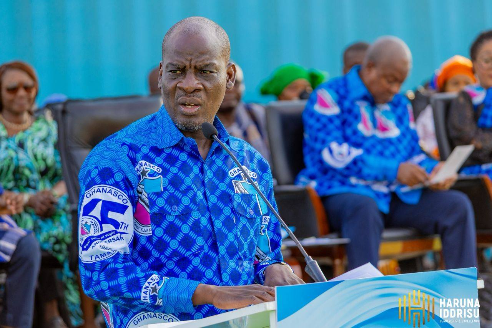
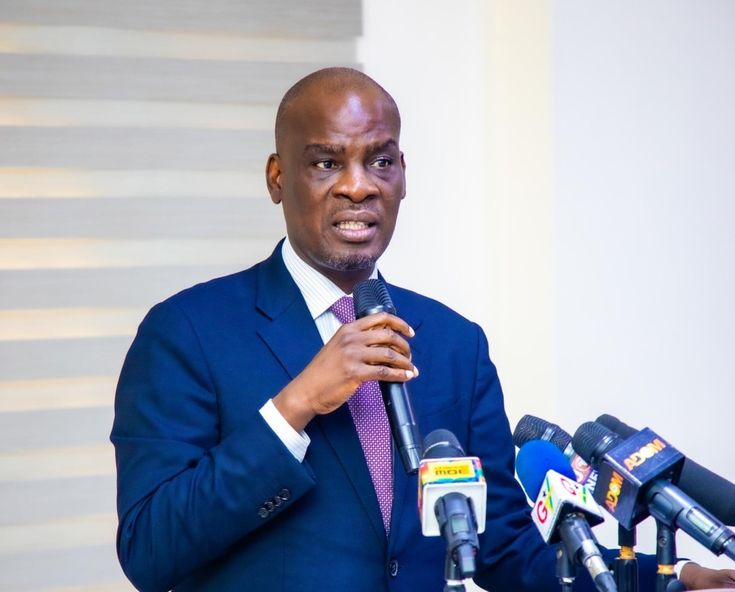
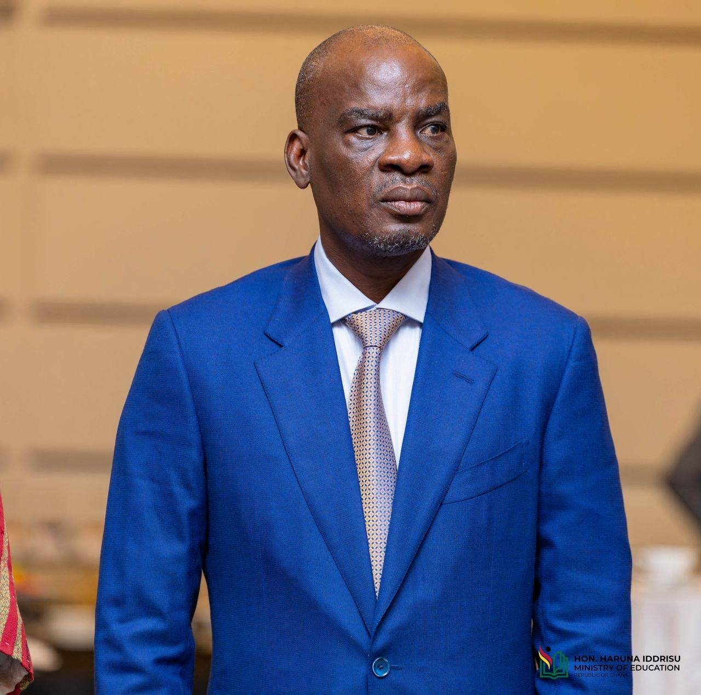

Hon. Iddrisu, in collaboration with H.E. President John Dramani Mahama, recently broke ground on the Tamale 24-Hour Economy Market at Kukuo. This landmark project is more than a trading space; it is a flagship component of the NDC’s national economic transformation agenda.
Recognizing that sustainable development is impossible without access to clean water, Hon. Iddrisu has made the resolution of the Tamale water crisis a top-tier priority.

As Minister for Education, Hon. Haruna Iddrisu's focus has been on continuity, infrastructure expansion, and equitable access to education.
A major policy direction has been the commitment to complete all inherited and stalled educational infrastructure projects nationwide.


As Minister for Communication, Hon. Haruna Iddrisu led major reforms that strengthened Ghana's ICT ecosystem and expanded digital access nationwide.
One of the most impactful reforms under his tenure was the introduction of Mobile Number Portability, allowing telecom users to switch networks without changing their phone numbers.
To enhance national security and regulatory oversight, his ministry implemented the nationwide SIM card registration policy.
He championed the passage and implementation of Ghana's Data Protection regime, ensuring that personal data of citizens is safeguarded.
Under his leadership, the government invested in the National Data Centre, a critical infrastructure for digital governance.
Impact: His tenure laid the foundation for Ghana's modern telecom and digital governance systems, making ICT a key driver of economic growth.